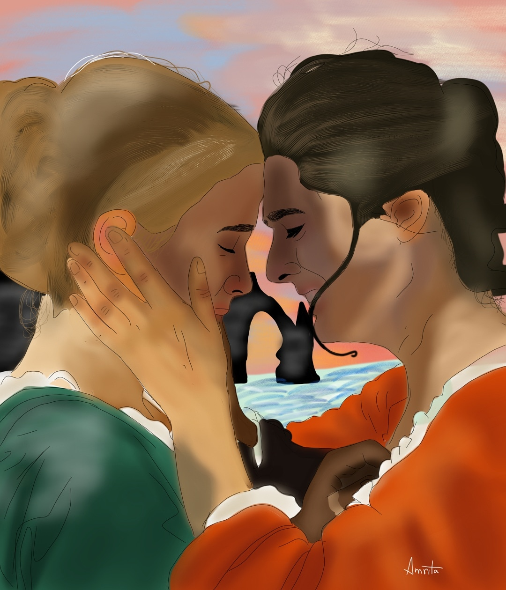
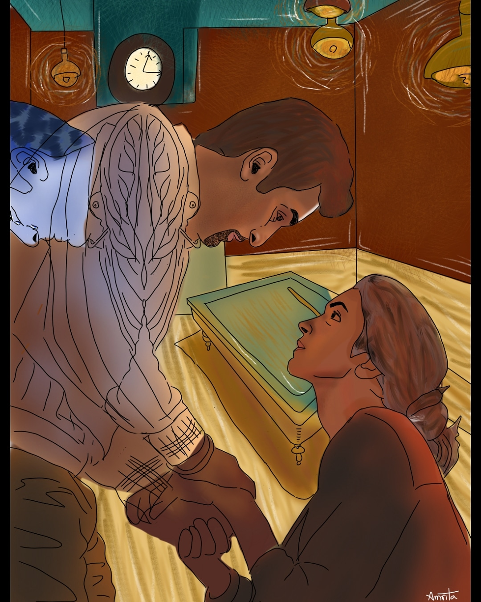

To see two or more pieces of art converge and give birth to a new and fresh entity of art is beautiful. And that is what crossovers necessarily give us, an art child.
~To see two or more pieces of art converge and give birth to a new and fresh entity of art is beautiful. And that is what crossovers necessarily give us, an art child.
~Crossovers are not mixing random artworks or movie references though, you need to look for one converging point.
~It can be in the emotion, in the surrounding, the relation, the characters and so on.
~To see beyond what your eyes are showing you, to pull out old memories and to imagine the past and present together is what makes this genre come to reality mostly.
Emotions via Crossover

Portrait of a Lady on Fire >< The Cliff,Etretat,Sunset

Tamasha >< The Night Cafe
Joker >< The Old Guitarist >< Sleeping Drinker